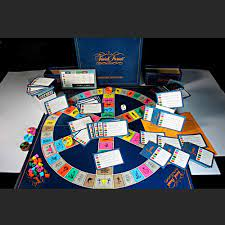
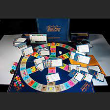

- Antigüedad: Los juegos de mesa tienen sus raíces en la antigüedad, con juegos como el Senet en el antiguo Egipto, que se remonta a alrededor del 3500 a.C. Este juego era popular entre los faraones y se jugaba tanto por diversión como como parte de rituales funerarios.
-
Ajedrez: Uno de los juegos de mesa más antiguos y populares es el ajedrez, que se cree que se originó en la India alrededor del siglo VI d.C. Desde entonces, el ajedrez se ha convertido en uno de los juegos estratégicos más jugados en todo el mundo.

- Juegos de mesa en la Edad Media: Durante la Edad Media, los juegos de mesa como el backgammon y el mancala se volvieron populares en diversas culturas de todo el mundo. Estos juegos a menudo se jugaban como una forma de entretenimiento en la corte real y entre la nobleza.
-
Renacimiento y Revolución Industrial: Durante el
Renacimiento y la Revolución Industrial, los juegos de mesa se hicieron
más accesibles a medida que la impresión permitía la producción en masa de
juegos como el Monopoly y el Scrabble. Estos juegos se convirtieron en
elementos básicos en muchos hogares y continuaron evolucionando con el
tiempo.


-
Siglo XX y XXI: En el siglo XX, la popularidad de los
juegos de mesa continuó creciendo con la introducción de juegos como Risk,
Trivial Pursuit y Settlers of Catan. Con el advenimiento de Internet, los
juegos de mesa en línea también se volvieron populares, permitiendo a las
personas jugar con amigos y desconocidos de todo el mundo.
 


-
Renacimiento de los juegos de mesa modernos: En las
últimas décadas, ha habido un renacimiento de los juegos de mesa modernos,
con una amplia variedad de juegos nuevos y emocionantes que abarcan una
variedad de géneros y mecánicas. Juegos como Ticket to Ride, Carcassonne y
Pandemic han ganado popularidad tanto entre jugadores casuales como entre
entusiastas más dedicados.